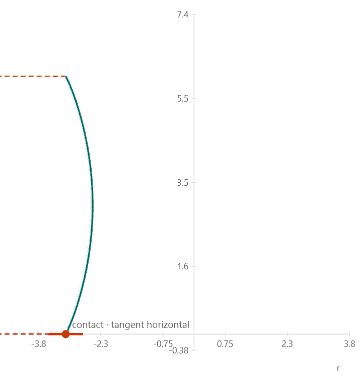

The geometry of a rocking body
Before solving the dynamics, define what it means for a rigid body to rock: its potential energy, its moving tipping point, and the smooth approximation that makes the equations numerically usable.
Rocking is a corner-to-corner motion
For a rectangular body, the potential energy is
\[ V(\theta) = mg\sqrt{r_0^2+h^2}\,\sin(\bar{\theta}+|\theta|) \]
The offset θ̄ is the angle made the line joining center of mass to one of the corners, given by
\[ \bar{\theta} = \arctan\left(\frac{h}{r_0}\right) \]
Because of vertex at θ = 0, it is infinitely stiff.
Change the transition angle
The smooth sign is controlled by the transition angle θ₀ and a central slope m; the mini-sim chooses m = 1.5 / θ₀. The smooth potential energy replaces |θ| with the integral of the smooth sign from 0 to θ:
\[ V(\theta) = mg\sqrt{r_0^2+h^2}\,\sin\!\left(\bar{\theta}+\int_0^\theta \operatorname{sgn}(\theta')\,d\theta'\right) \]
The transition is marked at ±θ₀, where the sign reaches the constant ±1 branches.
Regularization is part of the model
The tipping point is defined by the sign of the rocking angle:
\[ r(q) = r_0\,\operatorname{sgn}(\theta)\,(\cos\phi,\ \sin\phi,\ 0)^{\mathsf T} \]
Here φ is the direction of tipping in polar coordinates: it selects the point on the perimeter about which the body tips in three-dimensional rocking, while θ is the tilt angle. For θ < 0, the tipping point is diametrically opposite. The identity \( r(\phi,-\theta) = r(\phi+\pi,\theta) \) lets the dynamics use one uniform description instead of separate if–then branches.
The replacement for sgn is constant at −1 and +1 outside a width w, with a C³ smooth curve between them. This matters because derivatives enter the velocity, kinetic energy, mass-matrix derivatives, and Newton iterations in an implicit ODE solver. A function such as tanh is not equivalent: without constant branches, pure rocking never occurs.
Turn the contact angle into a curve
The smooth sign determines the horizontal position of the tipping point, while the contact angle determines the local tangent of the body:
\[ r(\theta) = r_0\,\operatorname{sgn}(\theta) \]\[ \frac{dy}{dr} = \tan\theta \]\[ \frac{dy}{d\theta} = r_0\,\operatorname{sgn}'(\theta)\,\tan\theta \]
Outside the smooth transition, sgn′(θ) = 0. The horizontal coordinate stays fixed at r = ±r₀ while y continues to change, which is why the geometric path becomes vertical on the side walls.

Full experiment
Geometry Lab
Vary θ₀, the central slope m, and the contact angle while the smooth sign, derivative, potential energy, and tipping geometry update live.